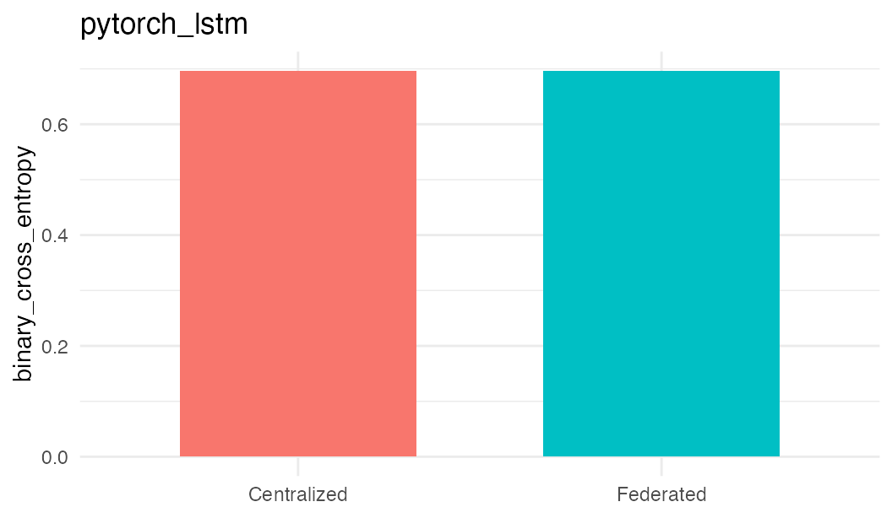

Validation: pytorch_lstm
validation-pytorch-lstm.RmdThis vignette records the catalogue coverage check for this authorised template. The federated run used three Opal/Rock nodes and the same pooled synthetic validation cohort was used for the local baseline. The purpose is method-path validation: data staging, template verification, Flower execution, result persistence, and cleanup. It complements the biomedical reports by checking the full template surface under deterministic conditions.
It is laid out in two parts: first the commands you would run to reproduce the validation, then the recorded results of that run loaded from the committed evidence artifact. No live Opal servers are required to render this page; the command chunks are shown for reference and are not executed.
Running This Validation
To check this template we compare a centralized
baseline against the federated dsFlower run. The
validation cohort is one synthetic dataset: the centralized baseline is
fit on the pooled copy, and the very same rows are partitioned across
three local Opal nodes that are already set up and serving the table
dsflower_demo.validation_cohort. The federated fit never
sees the pooled data, only the three node-resident partitions.
1. Connect to the DataSHIELD nodes. Open a single session across the three Opal nodes that hold the partitioned validation cohort.
library(DSI)
library(DSOpal)
library(dsFlowerClient)
builder <- DSI::newDSLoginBuilder()
builder$append(server = 'node1', url = 'https://opal-node-1.example.org',
user = 'researcher', password = '********',
table = 'dsflower_demo.validation_cohort')
builder$append(server = 'node2', url = 'https://opal-node-2.example.org',
user = 'researcher', password = '********',
table = 'dsflower_demo.validation_cohort')
builder$append(server = 'node3', url = 'https://opal-node-3.example.org',
user = 'researcher', password = '********',
table = 'dsflower_demo.validation_cohort')
conns <- DSI::datashield.login(builder$build(), assign = TRUE, symbol = 'D')2. Run the federated fit. Train this template through dsFlower with FedAvg over the server-side table, then log out. Only aggregate training history and model parameters are returned to the researcher.
fit <- ds.flower.fit(
conns,
symbol = 'D',
target = 'outcome',
features = paste0('x', 1:12),
model = 'pytorch_lstm',
strategy = 'fedavg',
privacy = 'sandbox_open',
rounds = 1
)
DSI::datashield.logout(conns)Recorded Results
The values below come from the committed evidence artifact for the run described above; no live servers are contacted when the article renders.
This run trained the pytorch_lstm template on the classification task (target outcome, 12 synthetic features) for 1 federated round(s) under the sandbox_open profile, across 3 Opal/Rock nodes holding the same pooled cohort used for the centralized baseline.
The centralized baseline reached a binary_cross_entropy of 0.6957; the federated run reached 0.6962 with 0 client failures, leaving this template pass. The acceptance comparison is shown below, followed by the centralized vs. federated loss.
max_allowed_loss <- row$centralized_loss * row$acceptance_max_loss_ratio +
row$acceptance_max_loss_margin
acceptance_output <- data.frame(
centralized_loss = row$centralized_loss,
federated_loss = row$federated_loss,
max_allowed_loss = max_allowed_loss,
federated_n_failures = row$federated_n_failures,
acceptable_loss = row$acceptable_loss,
validation_status = row$validation_status
)
knitr::kable(acceptance_output, digits = 4)| centralized_loss | federated_loss | max_allowed_loss | federated_n_failures | acceptable_loss | validation_status |
|---|---|---|---|---|---|
| 0.6957 | 0.6962 | 1.9893 | 0 | TRUE | pass |
loss_df <- data.frame(
mode = c('Centralized', 'Federated'),
loss = c(row$centralized_loss, row$federated_loss)
)
loss_df <- loss_df[is.finite(loss_df$loss), , drop = FALSE]
if (nrow(loss_df) > 0 && requireNamespace('ggplot2', quietly = TRUE)) {
ggplot2::ggplot(loss_df, ggplot2::aes(x = mode, y = loss, fill = mode)) +
ggplot2::geom_col(width = 0.65, show.legend = FALSE) +
ggplot2::labs(x = NULL, y = row$centralized_metric[[1]], title = method_id) +
ggplot2::theme_minimal(base_size = 11)
} else {
plot.new()
text(0.5, 0.5, 'No federated loss available for this method')
}